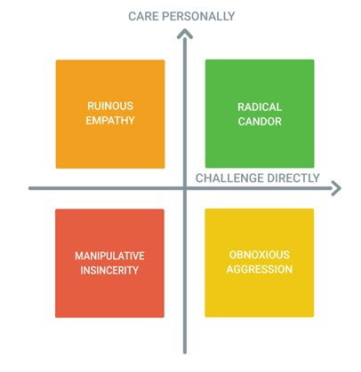

53. Societies Evolve to Normalize Psychopathic Self-Presentation
September 26, 2020
In which I entertain the hypothesis that civilization doesn't teach psychopaths to fake good manners but rather evolves to normalize psychopathic charm as the standard for polite behavior — that sufficiently advanced sociopathy is indistinguishable from good manners, per Kim Scott's Radical Candor grid.
Observation: psychopaths are often charming/reassuring and can put you at ease in a trusting, vulnerable state.
Hypothesis A: Psychopaths learn to fake norms of trustworthiness and reassurance
Hypothesis B: Societies evolve to normalize psychopath behaviors as norms for all
Hypothesis A: Psychopaths learn to fake norms of trustworthiness and reassurance
Hypothesis B: Societies evolve to normalize psychopath behaviors as norms for all
B is very intriguing. What if all is non-psychos pick up highly manipulative behaviors as “polite and considerate” behavior via imitation of powerful psychopaths? And so all societies have psychopathic cultures of manners as their UX?
Many of the actual kindest and most trustworthy people I know are ill-mannered. Not in the sense of being pointlessly rude or sadistic, but rough, uncouth, and ill-at-ease even in their own milieus. They can’t put others at ease.
Entertaining thoughts is fun. I guess why they call it entertaining. Building on that maybe I should host a party for thoughts, serve them alcohol (which I’d have to drink of course since they live in my head)
Okay, just thought up a pretty robust case for B that this margin is too small to contain. I’m upgrading it to working hypothesis.
Obv this is a subtweet thread of shit going on I can’t share publicly.
My entire writing career is an extended subtweet. My memoirs should be titled “Subtweeting the Universe”
My entire writing career is an extended subtweet. My memoirs should be titled “Subtweeting the Universe”
Trying on 2 summary aphoristic versions of the hypotheses for size
A: Sufficiently advanced psychopathy/sociopathy is indistinguishable from good manners
B: Civilization is the process of turning sociopathy into good manners
B strikes me as more true
A: Sufficiently advanced psychopathy/sociopathy is indistinguishable from good manners
B: Civilization is the process of turning sociopathy into good manners
B strikes me as more true
Oh shit just realized @kimballscott 2x2 fits right into this theory. Ruinous empathy and manipulative insincerity are right next to each other and if you can’t tell real/fake “care personally” apart, they’ll look the same to you.

If you have low self-awareness you won’t be able to tell them apart even on yourself, and mistake your own manipulative insincerity for empathy. In the zone in between it may be ruinous for others but advantageous for you.
Subconscious = known unknown (“something is wrong here/spider sense tingling”)
Unconscious = you register the data necessary to draw the right conscious conclusion but don’t actually do so, and might never do so. Doesn’t need repression. Just failure to think it through.
Unconscious = you register the data necessary to draw the right conscious conclusion but don’t actually do so, and might never do so. Doesn’t need repression. Just failure to think it through.